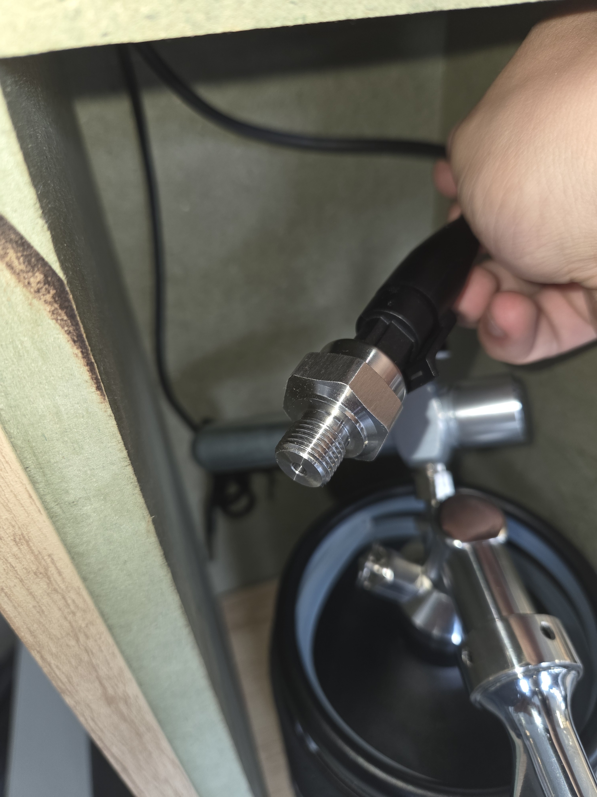
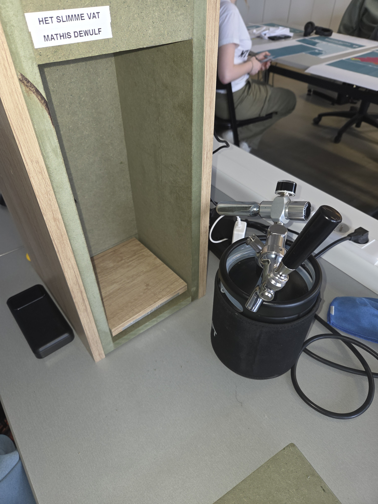
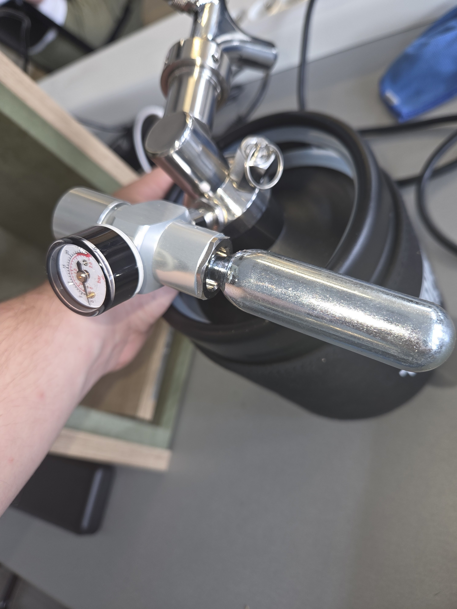
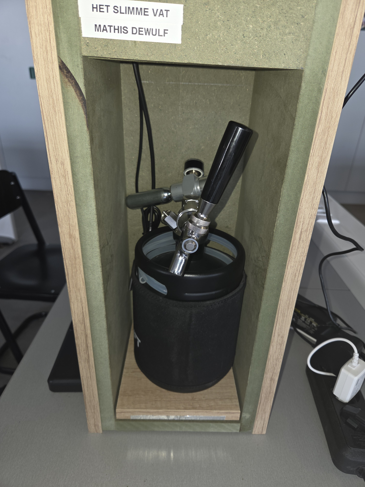

Draai de druksensor los van het vat.

Haal het vat uit de kast en zet al een nieuw vat aan de kant.

Tarreer eerst de weegschaal terwijl er geen vat op staat
Zorg zeker dat er een drukfles aanwezig is op het nieuwe vat.

Plaats het nieuwe vat op de weegschaal (als je die getarreerd hebt).

Geef het nieuwe vat eerst een naam.
Pas als alle bovenstaande stappen correct uitgevoerd zijn.
Druk op onderstaande knop om het nieuwe vat te starten.